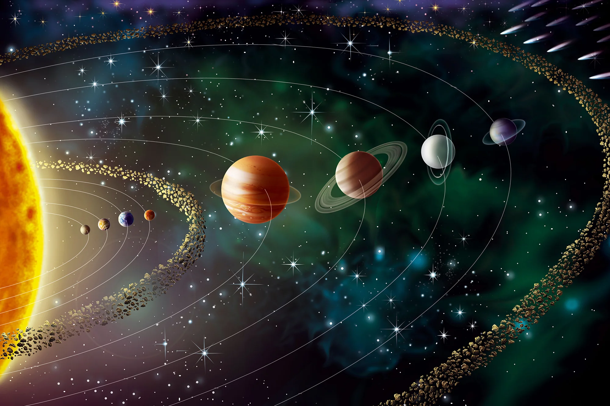

Mercury

Mercury is the smallest planet in our solar system and the nearest to the Sun.
Join us as we explore the wonders of our cosmic neighborhood.
The Solar System is a vast region centered around the Sun, encompassing eight planets, numerous smaller celestial bodies like asteroids and comets, and a vast number of moons. It formed around 4.6 billion years ago from a nebula of gas and dust.
Our Sun is a 4.5 billion-year-old yellow dwarf star – a hot glowing ball of hydrogen and helium – at the center of our solar system. It's about 93 million miles from Earth and is our solar system’s only star.
Mercury is the smallest planet in our solar system and the nearest to the Sun.

Venus is known as Earth's "twin" due to its similar size and mass, but it is the hottest planet.
Earth is the third planet from the Sun and the only known celestial body to support life. It has a balanced atmosphere, abundant water, and a magnetic field that protects it from harmful space radiation. Earth rotates once every 24 hours and takes 365.25 days to orbit the Sun.
Mars is the fourth planet from the Sun and is often called the "Red Planet" due to iron oxide (rust) on its surface. It has the largest volcano and canyon in the solar system and is a primary target in the search for past or present extraterrestrial life.
Jupiter is the fifth planet from the Sun and the largest in the solar system. A gas giant with no solid surface, it’s famous for its Great Red Spot—a giant storm larger than Earth. Jupiter has over 90 known moons, including Ganymede, the largest moon in the solar system.

Saturn is the sixth planet from the Sun, known for its spectacular ring system made of ice and rock particles. Like Jupiter, it is a gas giant and is mostly composed of hydrogen and helium. It has dozens of moons, including the potentially habitable Titan.
.png)
Uranus is the seventh planet from the Sun and rotates on its side with an axial tilt of 98 degrees. This ice giant is pale blue due to methane gas in its atmosphere and has a faint ring system and at least 27 known moons.

Neptune is the eighth and farthest known planet in the solar system. It is an ice giant with deep blue coloration and the fastest winds in the solar system. Discovered through mathematical prediction, it has 14 known moons, with Triton being the largest.